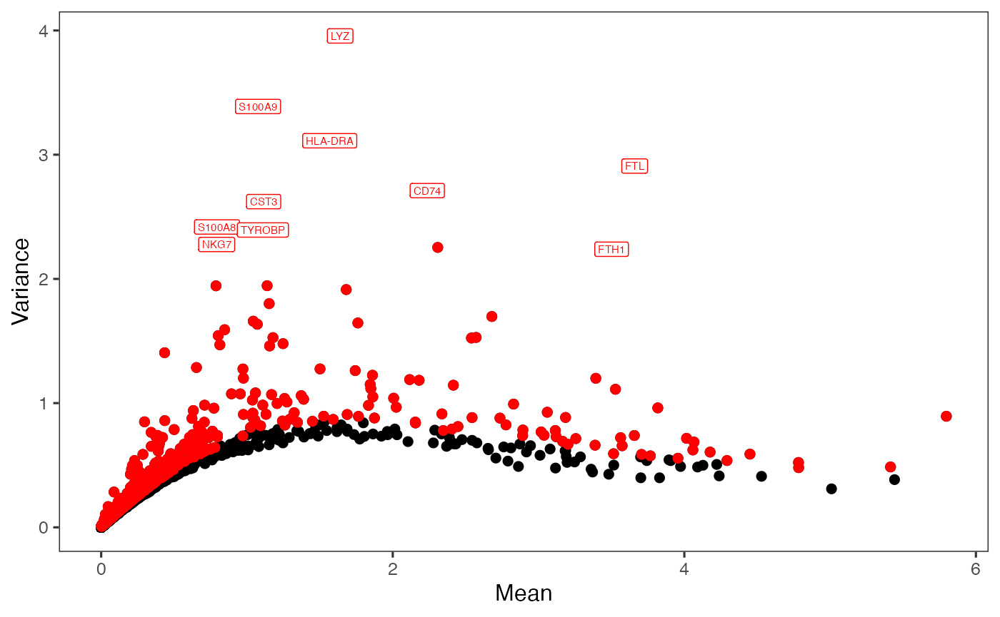
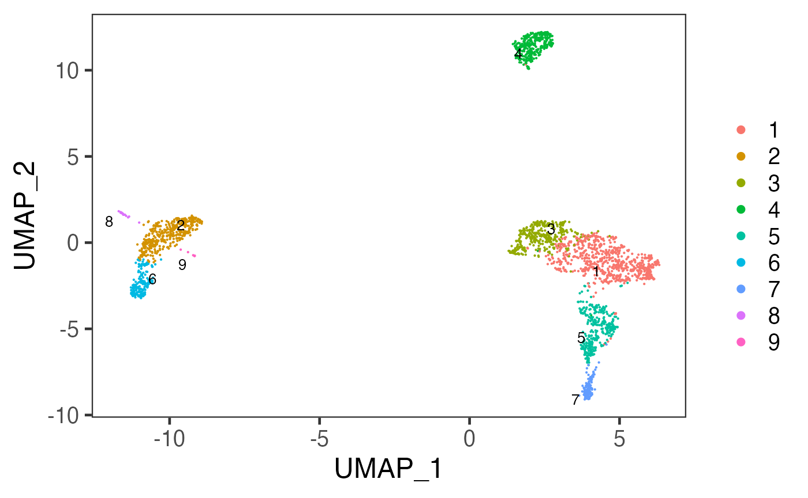
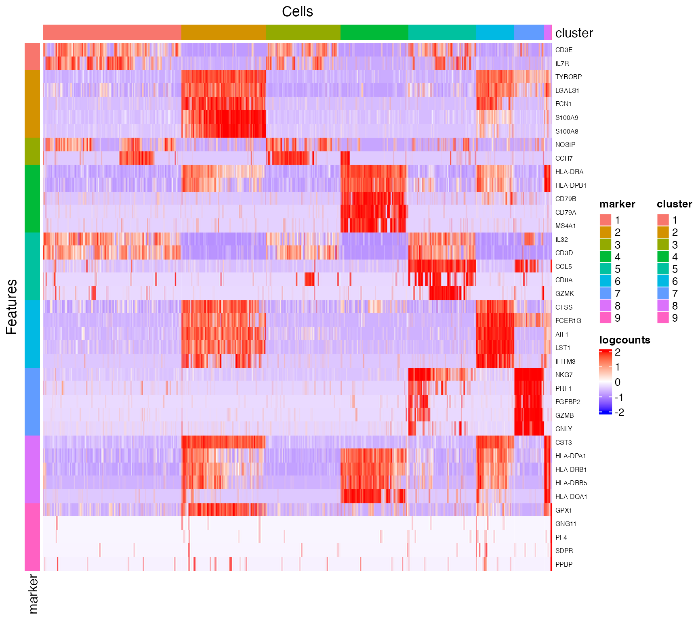
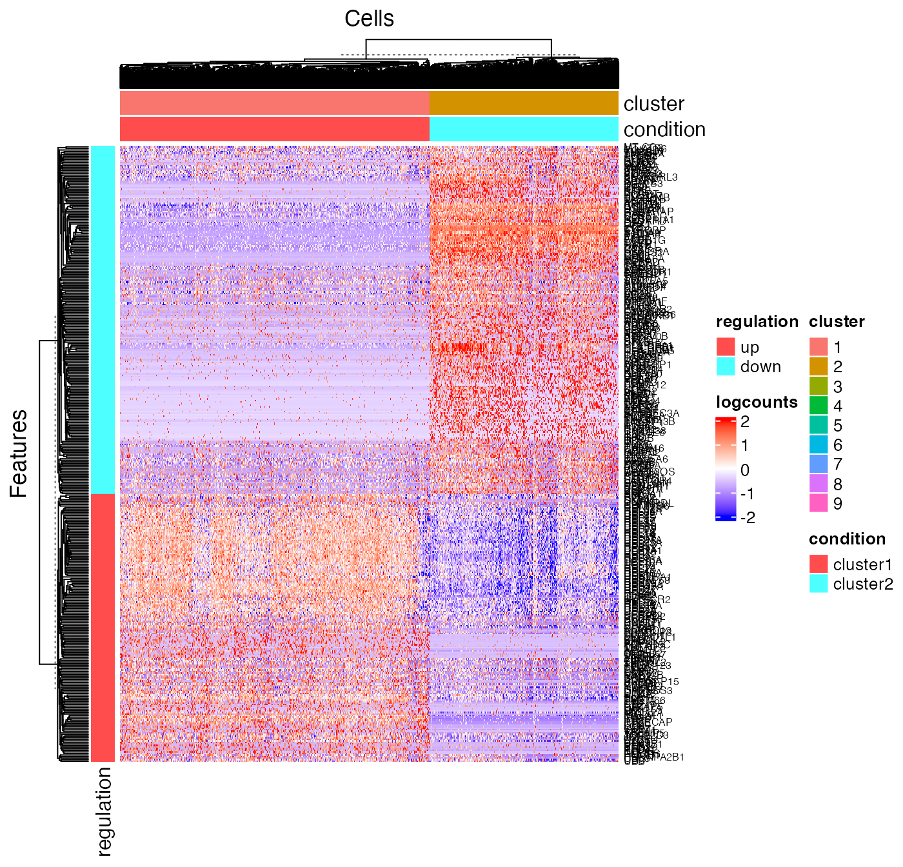
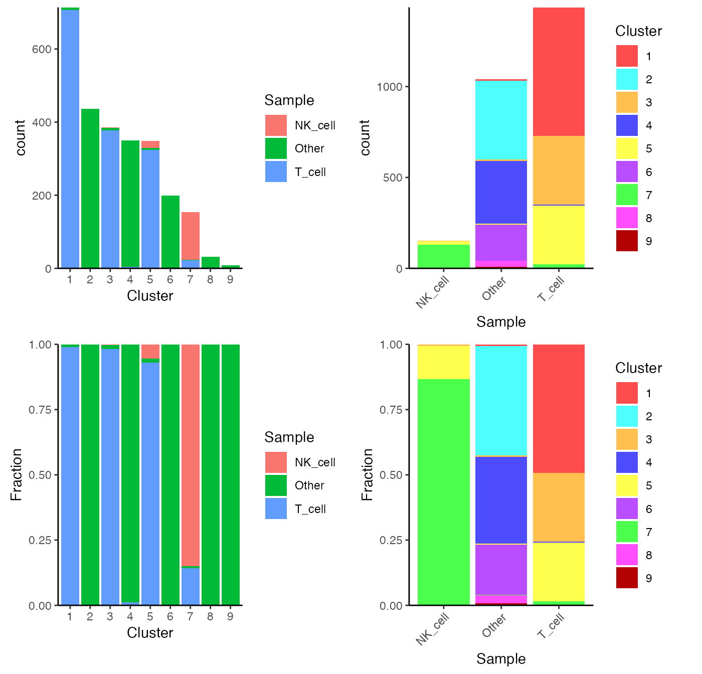
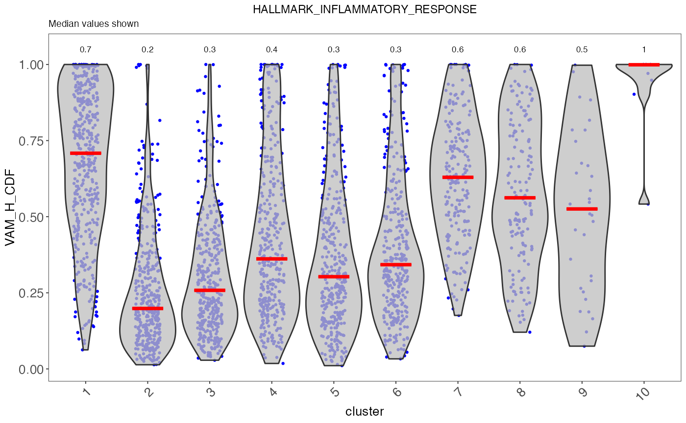
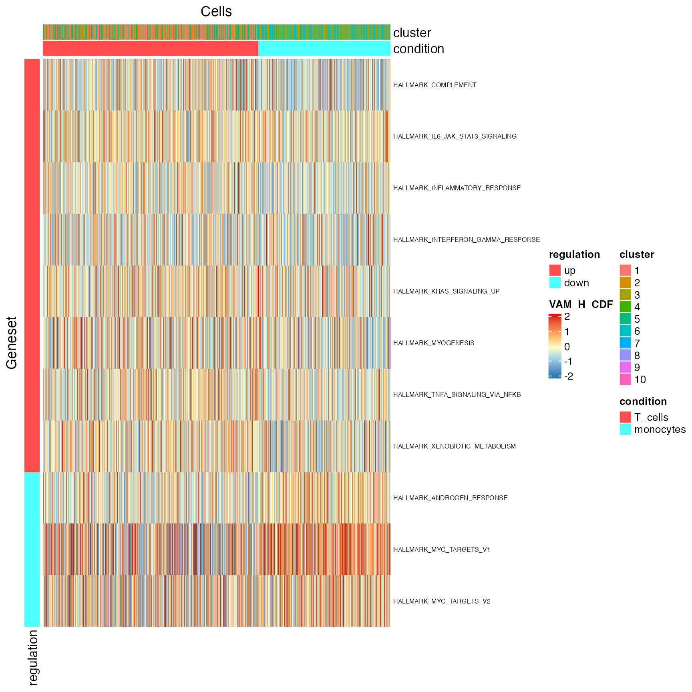

A La Carte Workflow Tutorial - PBMC3K
Yichen Wang
Source:vignettes/articles/02_a_la_carte_workflow.Rmd
02_a_la_carte_workflow.RmdIntroduction
Single Cell Toolkit (singleCellTK, SCTK) is a package that works on single-cell RNA-seq (scRNAseq) dataset. SCTK allows users to import multiple datasets, perform quality control and a series of preprocessing, get clustering on cells and markers of clusters, and run various downstream analysis. Meanwhile, SCTK also wraps curated workflows for celda and Seurat.
This tutorial takes the real-world scRNAseq dataset as an example, which consists of 2,700 Peripheral Blood Mononuclear Cells (PBMCs) collected from a healthy donor, namingly PBMC3K. This dataset is available from 10X Genomics and can be found on the 10X website.
Before heading into the next steps, we assume that users have already loaded SCTK, imported and QC’ed the PBMC3K data, following the Import and QC Tutorial.
Normalization
After removing cells of low quality, we next need to normalize the
feature expression matrix. In this tutorial, we apply a global-scaling
normalization method from scater,
"logNormCounts". It normalizes the feature expression for
each cell by the total expression, multiplies this by a scale factor,
and log-transforms the result.
For detail about all normalization methods, please refer to the Normalization Documentation

- Users should enter the section for normalization from the “Normalization & Batch Correction” tab at the top navigation panel.
- In the “Normalization” sub-tab, choose the method
"Scater - LogNormCounts"from the left panel. - Users can directly press the “Run” button at the bottom right without taking any more action.
SCTK has a generic wrapper function for various types of
normalization, called runNormalization().
sce <- runNormalization(sce, useAssay = "counts", outAssayName = "logcounts",
normalizationMethod = "logNormCounts")SCTK also supports a number of batch correction methods. Here we don’t present the workflow because PBMC3k dataset only has one batch. For examples, please refer to the document of batch correction.
We also recommend performing the scaling method to standardize the variance, and this results in a better PCA. The UI and console function allow users to perform scaling on the expression assay. However, we don’t recommend directly apply this to the full-sized expression matrix because the memory usage will be large. To accomplish this, we suggest finding the highly variable genes first in the next section, and only scaling the subset of the expression matrix as instructed.
Variable Feature Selection
Selecting highly variable genes (HVG) for downstream analyses is recommended, since a subset of variable features enhances the biological signal for community detection and reduces amount of data being used which hence speeds up the computation. SCTK wraps the methods used in Seurat and Scran. We recommend keeping at least 2,000-5,000 HVGs. In this tutorial, we use the “modelGeneVar” method from Scarn, and select the top 2,000 genes.
SCTK requires at least two steps to create the HVG subset. The first step performs variability calculation and stores the metrics, and the second step selects top genes basing on the ranking of the metrics.

- Users should enter the feature selection tab from the top navigation bar as instructed in the screenshot. And then the “Feature Selection” sub-tab.
- For the first step, in the top-left panel “1. Compute variability metric”, select the method via “Select method for calculating variability of features”. The assay to be used will be automatically updated on selection, since different method has different recommended assay type.
- Click on button “Run” to calculate the variability.
After calculation, the panel for selecting the top features, “2. Select number of variable features” becomes enabled. A scatter plot of features, with axes of variance and mean, will also be shown on the right panel “Plot”.

- In the bottom-left panel “2. Select number of variable features”, users now only need to click on the button “Run” to finish the selection for this tutorial.
After selection, the plot will be again updated, with highlighted red dots representing the selected features, texts labeling a smaller number (adjustable in the dropdown) of features with the top variability among the selected ones. The names of highlighted features are also updated in a text box at the bottom of the plotting region.
Note that:
- The metrics to be used for selection will only be available after calculation in the first panel.
- In the dropdown box at the top of the plotting region, users can choose to label the selected subset on a different metric scatter plot.
- When analyzing users’ own data, if the text labels of features being shown are Ensembl IDs (i.e. starts with things like “ENSG000”), users can change the display ID type with “Choose feature label”. This works only when the annotation is available in imported feature metadata. We strongly recommend users go back to the “Data” -> “Import Single Cell Data” page, scroll down to the bottom, and set the display ID type at “Set feature names to be displayed in downstream visualization”, so the change works globally through out SCTK.
For calculating the feature variablity, users can use either the
wrapper function of each method (runSeuratFindHVG(),
runModelGeneVar()) or using the generic wrapper
runFeatureSelection() with argument method
specified.
sce <- runModelGeneVar(sce, useAssay = "logcounts")
sce <- setTopHVG(sce, method = "modelGeneVar", hvgNumber = 2000, featureSubsetName = "hvg2000")Users can also get the character vector of gene names:
## [1] "LYZ" "S100A9" "FTL" "HLA-DRA" "CD74" "CST3" "S100A8"
## [8] "FTH1" "NKG7" "TYROBP"The variability metrics and the top variable feature selection can also be visualized:
plotTopHVG(sce, method = "modelGeneVar", hvgNumber = 2000, labelsCount = 10)
Dimension Reduction
The next step is performing a principal component analysis (PCA), which creates new uncorrelated variables that successively maximize variance and finally increases the data interpretability and at the same time minimizes the information loss.
With the HVG selected from the previous step, we will perform PCA using the method from Scater. As mentioned in the Normalization section, we will also have the selected HVG scaled in this step.
SCTK also supports Seurat’s PCA and ICA method, which do a similar job. Please see: Seurat Curated Workflow, and Dimension Reduction Documentation.

- Enter the main tab as instructed in the screenshot above. If users are following the previous steps in this tutorial, then we are already here.
- Enter the sub-tab for dimension reduction via “Dimensionality Reduction”

- All of the parameters have been automatically updated for the most commonly seen scenario. Users can directly click on button “Run” for this tutorial.
What we actually set for the parameters:
- Use the log-transformed normalized counts as the input
- Subset features basing on the selection in the previous section
- opt to scale the feature subset
Besides the scatter plot of the top two components for all cells, the switches also add an elbow plot and heatmap for visualization

After running, the plots will be updated on the right side. The elbow plot and heatmaps are internally calculated by Seurat functions.
The elbow plot is a heuristic method for determining the dimensionality to be used for downstream analysis. It is a ranking of principle components based on the percentage of variance explained by each one. In this example, we can observe an “elbow” around PC9-10, suggesting that the majority of true signal is captured in the first 10 PCs.
The heatmap allows for easy exploration of the primary sources of heterogeneity in a dataset, and can be useful when trying to decide which PCs to include for further downstream analyses. Both cells and features are ordered according to their PCA scores. Please refer to Seurat’s tutorial for more explanation on these two visualization approaches.
Here we use the wrapper function scaterPCA(). The name
of transformed normalized expression matrix can be passed to
useAssay (by default useAssay = "logcounts"),
and the name of the HVG subset should be passed to
useFeatureSubset. The scaling will be done by Scater by
setting scale = TRUE (default). The output PCs will be
updated in the reducedDims slot of the SCE object, named by
"PCA" by default.
sce <- scaterPCA(sce, useFeatureSubset = "hvg2000", seed = 12345)Afterwards, users can make scatter plots to visualize the top dimensions that explains the most variance of the original data:
plotDimRed(sce, useReduction = "PCA")
2D Embedding
Uniform Manifold Approximation and Projection (UMAP) and t-distributed Stochastic Neighbor Embedding (tSNE) are the most commonly used methods to visualize the relationships between the cells in a 2-D embedding. UMAP gives a better presentation of the global structure and is more efficient, while tSNE performs better in preserving the local structure.
In this tutorial, we calculate a UMAP embedding from the principal components generated in the previous step. We will use only 10 dimensions out of the 50 dimensions generated.

- Users should be at the same main tab as performing dimension reduction with PCA.
- Click on the last sub-tab “Embedding” to access the functionality for this section.

- Select the name of the PCA matrix we generated in the previous section, from the selection input “Select Input Matrix”.
- While users feel reasonable with other parameters, users can click on button “Run” to start the UMAP calculation.
After done, a scatter plot of all cells on the UMAP dimension will be shown on the right panel.
A UMAP can be generated with the function runUMAP(),
which is a wrapper of calculateUMAP() method in the
scater package. We will now use useReducedDim
argument to pass the PCA embedding just generated to the function. The
result will be saved in reducedDim slot.
Users can also create the tSNE embedding with runTSNE()
function, which works in a similar way as runUMAP()
sce <- runUMAP(sce, initialDims = 10, seed = 12345)
plotDimRed(sce, useReduction = "UMAP")
Note that we have another two functions runQuickUMAP()
and runQuickTSNE(), which wrap the two functions mentioned
above, respectively, and run directly from raw count matrix with all
steps in the workflow automated internally. They can help with fast
visualization at the beginning of an analysis.
Clustering
SCTK supports clustering cells with Shared Nearest Neighbors (SNN)
graph based methods and K-Means algorithm. For SNN graph based methods,
we wrap the graph constructor from scran library, and have
options of algorithms from igraph that can perform
clustering on the graph. Alternatively, in the Seurat Curated Workflow, the
Seurat’s SNN graph construction and community detection method are also
wrapped as one method.
In this tutorial, we use the scran SNN graph approach, with the community detection algorithm set as Louvain. We will use the top 10 components for identifying the clusters. Though we have generated the UMAP representation in the previous section (also using 10 PCs), users are always allowed to test clustering with different numbers of PCs. In this case, we strongly suggest regenerating the UMAP with the consistent number of PCs, so that the UMAP can best reflect the information included in the PCs.
For the scran SNN graph approach, the parameter k can
always be tweaked as it affects the connectivity of the graph. When
k is larger, stronger connection will be constructed across
the cells, thus larger and fewer clusters will be identified. Parameter
weightType allows for different shared neighbor weighting
schemes. In this tutorial, we use "jaccard" as it provides
consistency with Seurat methods.

- Users should enter the clustering tab via the top navigation bar as instructed in the screenshot above.

- Select the same PCA matrix as we’ve done in the 2D Embedding section, at the selection input “Select Input Matrix”
- Tweak the parameters as we described in the introduction of this section.
- Click on button “Run” to start clustering the data.
Upon completing clustering, a scatter plot of cells on a low-dimensional representation with cluster labeling colored on each cell will be shown on the right. However, we use the dimensions used for calculation as the default. For the best visualization, we suggest users change the dimensions to the 2D embedding obtained from the same components (of the same PCA matrix) as used for clustering.
- In the dropdown panel of the plotting region, select the UMAP we previously generated from “Use Reduction”, and then click on button “Update”.
With runScranSNN() function, the dimension reduction
matrix can be specified through argument useReducedDim, and
the cluster label assignment will be updated in the colData
slot, and the variable will be named by argument
clusterName. The default graph clustering algorithm is
Louvain, while we also provide options including Leiden, Walktrap and
etc. (from igraph).
sce <- runScranSNN(sce, "PCA", clusterName = "cluster", nComp = 10,
weightType = "jaccard", k = 14, seed = 12345)After getting the cluster labeling, we can then visualize it:
plotSCEDimReduceColData(sce, "cluster", "UMAP")
In the other curated workflow that SCTK wraps (Celda Curated Workflow), we use a Bayesian hierarchical model that can bi-cluster features into modules and observations into subpopulations. For detail of this method, please refer to the Celda Documentation.
Marker Detection
Users can next perform marker detection process with the cluster labels, or any other types of reasonable grouping of similar biological state of cells stored in the cell metadata. SCTK iteratively finds markers for each cluster by running differential expression (DE) analysis on the cluster against all the other clusters.
Although we selected the variable features and reduced the dimensionality of the original expression matrix, here we will get back to the transformed normalized counts of all features.

- Click on the “Differential Expression & Cell Type Labeling” tab at the top navigation bar.
- In the dropdown, click “Find Marker” to enter this tab, as instructed in the screenshot above.

- Users need to check if the proper log-normalized assay data is chosen at selection “Select assay”. SCTK usually push a recommended one to the top, but sometimes alternatives of the same type can be in the place. Also, users need to select the cluster label variable at selection “Cluster Annotation”.
- Click on “Run” button to start the analysis.
After the analysis is done, the result would be presented in the right main panel, with a marker heatmap and the table of statistical metrics. Users can tweak the displaying parameters of each through the dropdown menu or filter module, respectively.
sce <- runFindMarker(sce, useAssay = "logcounts", method = "wilcox", cluster = "cluster")By running runFindMarker(), SCTK stores a
data.frame of marker table to the matadata
slot of the SCE object. The marker table will include all detected
markers for each cluster and statistical values associated to each
marker. To fetch the table, users can use the command below, and even
add filtering parameters.
topMarkers <- getFindMarkerTopTable(sce, topN = 1, log2fcThreshold = 0,
fdrThreshold = 0.05, minClustExprPerc = 0.5,
maxCtrlExprPerc = 0.5, minMeanExpr = 0)
topMarkers## Gene Log2_FC Pvalue FDR cluster clusterExprPerc
## 1956 S100A9 4.3918388 1.231801e-205 2.016334e-201 1 0.9976852
## 26958 CCR7 0.6107894 7.062217e-41 3.400042e-38 2 0.5662338
## 87641 IL7R 0.6949784 1.462605e-36 1.294129e-33 3 0.7493404
## 26825 CCL5 3.0724416 1.407334e-149 4.607331e-145 4 0.9715909
## 106781 HLA-DRA 3.2851089 6.201038e-183 1.015048e-178 5 1.0000000
## 16364 CD2 0.5344754 6.223183e-26 2.263717e-22 6 0.6377246
## 106091 LST1 2.8798261 3.464220e-101 3.780388e-97 7 1.0000000
## 310761 NKG7 4.2518808 8.025412e-81 2.627359e-76 8 1.0000000
## 288182 CST3 3.2975861 2.221917e-16 1.039159e-12 9 1.0000000
## 7697 PPBP 5.9620589 9.423341e-07 2.504757e-03 10 1.0000000
## ControlExprPerc clusterAveExpr
## 1956 0.23234624 4.7456645
## 26958 0.13425513 0.7668583
## 87641 0.34697509 1.2221913
## 26825 0.21538462 3.4483627
## 106781 0.49561018 4.4163508
## 16364 0.27387702 0.8940661
## 106091 0.30363036 3.4602852
## 310761 0.25777778 4.7980173
## 288182 0.39113680 4.3717555
## 7697 0.02406417 5.9894455For visualization, SCTK has a specific heatmap plotting function for detected markers. The heatmap will take the log-normalized feature expression matrix for the values (scaled when plotting), and subset the features to only the top markers of each cluster. For the organization of the heatmap, the function groups the markers by the belonging to the clusters, and groups the cells, obviously, by clusters.
plotFindMarkerHeatmap(sce, topN = 5, log2fcThreshold = 0.5,
fdrThreshold = 0.05, minClustExprPerc = 0.5,
maxCtrlExprPerc = 0.5, minMeanExpr = 0,
rowLabel = TRUE)
As we can observe from the marker heatmaps above, most of the clusters can be easily differentiated by the top marker genes of each cluster. However, “cluster 1” and “cluster 2”are seemingly having less difference between each other than compared to other cell clusters, in terms of the marker genes presented in the heatmap (top 5 markers for each cluster). To further explore the differential expression between them, we could do a cluster-by-cluster DE analysis in the next section.
Differential Expression Analysis
Beyond finding the markers for each cluster, usually people are also interested in the differential expression between specific clusters and even groups of clusters. SCTK provides a relatively flexible way for conducting such analysis.
There are multiple ways to specify the groups of cells to be compared: by either directly specifying indices of cells, or selecting groups of cells with a categorical variable annotated in the cell metadata. However, when running DE analysis, SCTK requires a relatively sophisticated inputs for naming the analyses, including the names of the two groups, and the name of one analysis, though these are not necessary for calling the algorithms alone. By requiring these, the results of the analyses can be stored with human readable identifiers and within one single data container (SCE object), and can be more manageable. See the DE documentation for the detail.
Continued from the previous section, we will now set “cluster 1” and “cluster 2” as the two groups to perform the analysis.


- Click on the “Differential Expression & Cell Type Labeling” tab at the top navigation bar, and then click on “Differential Expression” to enter the tab
- At the first section, check for the log-normalized assay to use for the DE test, at selection “Select assay”.
- Name the two groups involved in an single analysis.
- In this tutorial, we set the condition by using a categorical cell metadata (as selecting “By annotations” at the top). Now users will need to select the variable that stands for the cluster labeling, as selection “Choose Annotation Class”
- After setting the cluster variable, users can now choose the cluster(s) for each condition. Multiple selection for each condition is enabled in case users want to perform the DE analysis on any alternative grouping.
- Name this single analysis. This is required for SCTK to clearly store and present the results of multiple analyses.
- Finally, click on “Run” to start the DE analysis.
After running, The visualization section at the bottom of this tab will be automatically updated. SCTK provides a heatmap, a table of statistic metrics, a volcano plot, a violin plot and a regression plot for visualization. Users can tweak the display option through the dropdown menu of a plot or the filtering module of the table.

runDEAnalysis() is a generic function for performing
differential expression (DE) analysis between two selected groups of
cells. This is also used by runFindMarker(). By running DE
analysis, the function will take the expression assay with all features
and perform statistical analysis to discover quantitative changes in
expression levels between selected groups.
sce <- runDEAnalysis(inSCE = sce, method = "wilcox", useAssay = "logcounts",
class = "cluster", classGroup1 = c(1), classGroup2 = c(2),
groupName1 = "cluster1", groupName2 = "cluster2",
analysisName = "cluster1_VS_2")Similarly to the marker detection section, SCTK also has a DE
analysis specific heatmap plotting function,
plotDEGHeatmap(). Here, users can just easily enter the
analysisName specified for one run and the function will
automatically arrange the output. The heatmap is also splitted into a
“checker board”, by the “conditions” (i.e. the groups selected when
running runDEAnalysis()) and the “regulation” (i.e. “up” if
the log2 fold change is positive in “group1” against “group2”).
plotDEGHeatmap(sce, useResult = "cluster1_VS_2", log2fcThreshold = 0.3, rowLabel = TRUE)
Besides using a feature expression assay for DE analysis, SCTK also
allows using matrices stored in the low-dimensional representation slot
of the data container (useReducedDim argument of
runDEAnalysis()). For example, when users perform a pathway
analysis and get a score matrix (stored in reducedDims
slot), DE analysis can be performed on this score matrix. See example.
Cell Type Labeling
SCTK adopts SingleR method for labeling the cell types. Briefly, this method labels each cell (or cluster) in users’ datasets basing on similarity to a reference datasets. SingleR has recommended some datasets, so we enable quick loading of these references. Please see Cell Type Labeling Documentation for detail.
Choosing a reference from the recommended builtin references would also require some prior knowledge of user data. Users should choose a reference that covers the cell types possibly existing in the user dataset. SingleR works by scoring the similarity to each cell type and assigning a cell type by the highest score, regardless of how low the score is. A beta cell from pancreas data could even be wrongly labeled as a platelet if using a blood cell reference.


- Click on the “Differential Expression & Cell Type Labeling” tab at the top navigation bar, and then click on “Cell Type Labeling” to enter the tab.
- Though this is optional, users could change the labeling level from “main” to “fine” at selection “Labeling level”. This option refers to what cell type annotation in the reference dataset the user dataset should be mapped to. It is also important to check the option “Feature type”, which asks for the default feature ID type.
- Users can click on “Run” to start the labeling at this point.
Users can visualize the labeling via a UMAP, by going back to the clustering tab.

- In the right main visualization panel of the clustering tab, choose “Select from All Present Annotation”.
- Select the variable that SingleR just produced. There will be three
types of labeling, ending with
first.labels,labelsorpruned.labels. - Click on “Update” to show the SingleR labels on the UMAP
The recommended reference can be chosen by specifying the
abbreviation name of them in argument useBltinRef. Please
click on the function name for usage detail.
sce <- runSingleR(sce, useAssay = "logcounts", level = "fine")The result of labeling will again be saved to colData
slot of the SCE object. There will be multiple types of information
being stored, including a scoring matrix named by
"SingleR_{ref}_{level}_scores", where {ref}
refers to the reference selected, {level} refers to the
level argument being passed to the function. And three
"SingleR_{ref}_{level}_{typeOfLabels}" columns, where
{typeOfLabels} includes first.labels,
labels, pruned.labels. For the difference,
please refer to ?SingleR::classifySingleR.
We can also plot the labeling on to the UMAP we got previously.
plotSCEDimReduceColData(sce, colorBy = "SingleR_hpca_fine_pruned.labels",
reducedDimName = "UMAP")
Differential Abundance
The goal of the differential abundance analysis is to determine if
categorical variables such as phenotype or sample (e.g. treatment or
control) are enriched in different cell clusters using the Fisher’s
exact test (FET). Any categorical variables in colData(sce)
can be used by passing the variable name to argument
cluster or variable. Categories in the
phenotype variable (used for variable) can be passed to
case or control. For this example, we try to
examine whether there are any cell clusters
enriched in an annotated cell type using
SingleR.
# Returns a vector where TRUE for a type of NK cell
isNKCell <- startsWith(colData(sce)$SingleR_hpca_fine_pruned.labels, "NK_cell")
# Returns a vector where TRUE for a type of T cell
isTCell <- startsWith(colData(sce)$SingleR_hpca_fine_pruned.labels, "T_cell")
# Make up a variable with only categories of "NK_cell", "T_cell" and "Other".
colData(sce)$cell_type <- ifelse(isNKCell, "NK_cell", "Other")
colData(sce)$cell_type[isTCell] <- "T_cell"
colData(sce)$cell_type[is.na(colData(sce)$cell_type)] <- "Other"
# Run differential abundance test
sce <- diffAbundanceFET(sce, cluster = "cluster",
variable = "cell_type",
case = "NK_cell", control = "T_cell",
analysisName = "NK_VS_T")Users can get the table of result with the method below, using the
analysisName specified when running the analysis.
getDiffAbundanceResults(sce, analysisName = "NK_VS_T")| Cluster | Number of cells in cluster and in T_cell | Number of cells NOT in cluster and in T_cell | Number of cells in cluster and in NK_cell | Number of cells NOT in cluster and in NK_cell | Fraction of cells in cluster and in T_cell | Fraction of cells NOT in cluster and in T_cell | Fraction of cells in cluster and in NK_cell | Fraction of cells NOT in cluster and in NK_cell | Odds_Ratio | Pvalue | FDR |
|---|---|---|---|---|---|---|---|---|---|---|---|
| 1 | 1 | 1435 | 0 | 151 | 0.000696 | 0.999 | 0.00000 | 1.000 | Inf | 1.00e+00 | 1.00e+00 |
| 2 | 378 | 1058 | 1 | 150 | 0.263231 | 0.737 | 0.00662 | 0.993 | 53.54253 | 9.54e-18 | 3.18e-17 |
| 3 | 373 | 1063 | 0 | 151 | 0.259749 | 0.740 | 0.00000 | 1.000 | Inf | 4.63e-19 | 2.31e-18 |
| 4 | 327 | 1109 | 20 | 131 | 0.227716 | 0.772 | 0.13245 | 0.868 | 1.93065 | 6.86e-03 | 1.37e-02 |
| 5 | 4 | 1432 | 0 | 151 | 0.002786 | 0.997 | 0.00000 | 1.000 | Inf | 1.00e+00 | 1.00e+00 |
| 6 | 332 | 1104 | 0 | 151 | 0.231198 | 0.769 | 0.00000 | 1.000 | Inf | 7.12e-17 | 1.78e-16 |
| 7 | 0 | 1436 | 0 | 151 | 0.000000 | 1.000 | 0.00000 | 1.000 | 0.00000 | 1.00e+00 | 1.00e+00 |
| 8 | 21 | 1415 | 130 | 21 | 0.014624 | 0.985 | 0.86093 | 0.139 | 0.00244 | 6.26e-144 | 6.26e-143 |
| 9 | 0 | 1436 | 0 | 151 | 0.000000 | 1.000 | 0.00000 | 1.000 | 0.00000 | 1.00e+00 | 1.00e+00 |
| 10 | 0 | 1436 | 0 | 151 | 0.000000 | 1.000 | 0.00000 | 1.000 | 0.00000 | 1.00e+00 | 1.00e+00 |
Alternatively, users can choose to directly make a plot using the two
variables and the function plotClusterAbundance() will
automatically calculate the statistic and visualize the result. The
proportion or count of each category in each cluster will be displayed
in stacked bar plots:
plotClusterAbundance(sce, cluster = "cluster", variable = "cell_type")
Pathway Analysis
For the purpose of gene set enrichment (GSE) analysis, SCTK imports VAM and GSVA as options. Both of them work by loading some user-defined gene sets (more about loading gene sets), and calculating the enrichment score of each gene set in each cell. Here we will go through calling VAM to inspect the enrichment of the hallmark gene sets available in MSigDB database. Please refer to the document for the detail of running pathway analysis with VAM or GSVA.
SCTK also supports GSEA method from EnrichR, which queries a given gene list and finds the significant overlap against the curated gene sets from multiple gene set libraries. For detail, please refer to EnrichR Documentation.


- Click on the “Enrichment & Pathway Analysis” tab at the top navigation bar, and then click on “Pathway Activity” to enter the tab.
- Select the assay to be used for the pathway analysis at the selection “Select assay”. A log-normalized assay is recommended.
- Select a gene set collection of interest at the selection “Select Geneset Collection”. If no option is available here, users can click on the link “Import Gene Sets” next to it to be prompt to the tab for importing gene set. (See documentation for how to import gene sets)
- Click on “Run” button to start the analysis.
After finished, a violin plot will be shown in the right main panel. By default, SCTK shows scores in all cells for the first gene set in the selected collection, in a single violin plot. With options in the dropdown menu, users can choose to shown the scores of a different gene set at seletion “Select Geneset”, or group the scores by the cluster labels by choosing the cluster variable at the selection “Select condition of interest to group data”. After tweaking the options, click on button “Update Plot” to apply the changes.
sce <- importGeneSetsFromMSigDB(sce, categoryIDs = "H", species = "Homo sapiens")
sce <- runVAM(sce, geneSetCollectionName = "H", useAssay = "logcounts")To visualize the result, we simply adopt a violin plot to show the distribution of the CDF scores of the cells, which can be, optionally, grouped by the cluster labels.
hallmark <- "HALLMARK_INFLAMMATORY_RESPONSE"
plotPathway(sce, resultName = "VAM_H_CDF", geneset = hallmark, groupBy = "cluster")
Note that available options for argument resultName and
geneset can be printed with getter functions below.
getPathwayResultNames(sce)
getGenesetNamesFromCollection(sce, geneSetCollectionName = "H")Note: In the current version of SCTK, the returned score matrices from either VAM or GSVA are stored in the
reducedDimsslot, since the feature dimensions are for the gene sets instead of the genes or subsets of genes. In the future, SCTK will adopt other types of data container for simpler operation on different types of feature sets.
Performing DE Analysis on Pathway Analysis Scores
SCTK allows users to select the score matrix from pathway analysis to perform differential expression analysis. In this process, each geneset will be treated as the feature, and comparison groups can still be set in the same way as introduced in DE analysis section.
Please refer to the DE analysis section for how to reach the tab for performing DE analysis.

- At the selection “Select assay”, scroll down and find the section called “redDims”. From here, select the matrix for the VAM score.
- Enter the analysis settings as introduced before.
- Click on button “Run”.
The same result presentation methods will be shown at the bottom of
this tab. Users might need to check the console log message at this
point if the heatmap is not shown. The default log2 fold-change cutoff
works for the log-normalized gene expression value, and is usually too
high for the pathway analysis score to keep any gene sets. Therefore, we
recommend users to open the dropdown menu and set the log2 fold-change
cutoff to a value around 0.03 to update the heatmap.
To run DE analysis with matrix in the reducedDims slot,
users only need to simply specify the matrix name to argument
useReducedDim (useAssay will be ignored in
this case).
sce <- runDEAnalysis(inSCE = sce, method = "wilcox", useReducedDim = "VAM_H_CDF",
class = "cluster", classGroup1 = c(1, 2, 5), classGroup2 = c(3, 6),
groupName1 = "T_cells", groupName2 = "monocytes",
analysisName = "T_cells_VS_monocytes_VAM_H_CDF", overwrite=T)As the nature of the pathway analysis score is different from a log-normalized gene expression value, the default cutoff for log2 fold-change is likely to rule out all gene sets in this case. Therefore, we need to manually set a rather small value for this cutoff.
plotDEGHeatmap(sce, useResult = "T_cells_VS_monocytes_VAM_H_CDF", rowTitle = "Geneset", log2fcThreshold = 0.05)